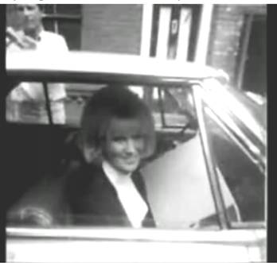

Amy Dodd
Feature film synopsis by Jim Terr © 2008
505-425-6134 bluecanyon2@newmexico.com

(Inspired by this photo of Dusty Springfield, ca. 1966)
CHIP BODNER, a 17-year-old junior at Highland High in Albuquerque, is miserable that he won’t be able to attend the concert by British singing star Amy Dodd at the Civic Auditorium. It’s summer 1964, and he handles the night shift at the desk of his parents’ Far West Motel.
His parents have no objection to him attending the Friday night concert (since it’s his own $3.00 he’ll be spending on the ticket) [check], but his parents are out of town until the following morning, and he has no authorized replacement, and he’s not the sort of kid to just abandon his post.
So Chip is thrilled when his “friend,” star athlete and senior class president Payton Pollack, frantically calls him that afternoon to ask Chip to drive him to the Amy Dodd news conference at the concert venue, at 4 o’clock. Payton’s car has broken down not far from the Far West Motel, and Payton is going to represent his school at the press conference (and, he imagines, make a big personal impression on Amy, possibly leading to bigger things…)
19-year-old Amy’s soulful ballads have captivated Chip as well as millions of others worldwide, and her quiet, reserved manner -- while typical of teenaged rock stars being directed by powerful businesspeople -- also seems genuine and hints at an actual inner life and inner strength. Her eyes and demeanor also convey a sense of loneliness. In any case Chip’s unfulfilled teenaged yearnings are totally activated and stretched by Amy.
But it is Payton who will get the glory of addressing a few words to Amy at the press conference, not Chip. In fact, when Chip arrives to rescue Payton, Payton bullies him into letting him (Payton) drive – fast and dangerously – to get to the press conference in time, and makes no arrangement for Chip to get inside, past Security. He expects Chip to wait obediently outside for him until the press conference is over – which he does.
As Chip is sitting in the car, daydreaming and half-dozing while listening to a sweet Amy Dodd hit on the radio, he’s awakened by a big, loud bump! His bumper has been hit by a limousine, and from the limousine emerges a short, loud, brash, hurried manager with a brusque apology and a $5 bill offered as a buy-out/apology. Then from the limo emerges… Amy Dodd!
Seeing her manager brush off Chip with the excuse that “we’re in a hurry, late for the press conference,” Amy comes over to Chip and apologizes personally. The eye contact is electric, at least for Chip. He stumblingly tries to explain that he drove his friend to the press conference and would love to get in himself… but he’s cut off by the manager, who grabs Amy and hurries her inside. She shoots an apologetic backward glance at Chip.
Inside, Payton makes an ass out of himself with a thinly-disguised come-on to Amy in the form of a cloying, fawning “question”. The local press also ask the usual embarrassing, hackneyed, unrevealing and uninteresting questions. Amy tries her best to answer in a dignified, responsive way, but we feel her pain and the general alienation which prevails.
One questioner asks about any upcoming songs Amy plans to record, whether she might sing them a few bars. She’s diffident, but they egg her on and she sings a couple verses of a ballad she’s writing – one of her first attempts at songwriting.
Her acapella performance is so touching that the room is eerily quiet and many of the attendees are tearing up, but when she stumbles on a lyric, and apologizes, her manager cuts her off and ends the news conference as this isn’t really the sort of song she’ll be recording, it’s getting late, she’s gotta get ready for tonight’s concert, etc.
Out back, Chip worries that he’ll be late for his 6pm shift. Payton finally emerges with a very inflated account of his electrifying encounter with Amy and her very warm, personal response, and says he’ll just stick around til the concert and hang out with friends, so Chip is free to head on home; Payton will call Chip tomorrow to help him pick up his disabled car. (Hey – thanks).
Chip lingers for a moment, staring longingly at the stage door, but Amy doesn’t emerge. He gets back just in time to relieve the daytime replacement desk clerk from his 12-hour shift, and sadly takes his post. As he heats up a TV dinner, he watches the 6:00 news, including a report from Amy’s news conference.
HERE WE HAVE A SEQUENCE OF AMY’S CONCERT – A COUPLE GREAT SONGS, A FEW SMALL INTRIGUES BOTH ON-STAGE, OFF-STAGE AND IN THE AUDIENCE (INCLUDING MORE BRAGGING AND WAVING FROM PAYTON), AND A CONTINUING SENSE OF AMY AS A THOUGHTFUL, SUBSTANTIAL, BUT LONELY GIRL CAUGHT UP IN A BIG MACHINE.
Chip listens to the radio and deals with the occasional motel guest and late check-in, and watches the 10 o’clock news, where there’s some footage of the concert, as well as an announcement that the following night’s concert in Amarillo has been cancelled due to an unseasonably late tornado having damaged the concert venue! It is unknown what Ms. Dodd’s plans will be, in light of this development, but we hope she will spend an extra day in our area… etc…
Chip works on the crossword puzzle in the newspaper, reads a bit, and dozes…
About 3 a.m. he’s awakened by a call from Room 234, part of a suite of rooms rented by “Bayside Enterprises,” whose check-in and pre-payment was handled earlier in the day per a note left by the day clerk. A young woman apologizes for the wake-up, but asks if Chip can come up and fix the soda machine on the second floor. He goes up to unlock the machine, and who should be standing there but Amy! (They recognize each other). It’s her organization that’s staying at the motel. Amy says she could have had her assistant handle the pop machine, but she didn’t want to wake her.
Amy and Chip are both a bit shy and embarrassed, but Amy breaks the ice with a question about the word “glitzy” – asking if that’s American slang – a word she saw in the crossword puzzle she’s working on to get through her insomnia. Chip is pleased that she’d think he might know, and does his best to help [check on this], and they’re both pleased that they’re both working on the same crossword puzzle. They excitedly share a little more linguistics discussion, and she’s about to pull back when Chip remembers the news about the Amarillo cancellation and asks her what her plans are for the next day.
She says she doesn’t really know, but (now less excited than sad) says that her manager has asked her to be ready to appear at a shopping center opening he had hurriedly lined up for a little self-promotion and a few extra bucks. After a moment’s silence, she floors him with the suggestion that she ditch all that, and why doesn’t he just show her around town!? They agree that as soon as he gets off his shift at 6 a.m., they’ll meet behind the office and take off!
With Amy sufficiently disguised in sunglasses and a plain outfit, they stroll and goof around Old Town, explore the Sandia foothills, and end up around mid-afternoon taking a quiet, warm stroll on the beach -- which in this case is the Rio Grande bosque.
Numerous adventures and incidents…. When Chip is just about to kill a snake which has startled them, Amy asks him not to, since she happens to know that it’s a non-poisonous snake, and she’d rather they just let it go on its way. She shows him two “hand-slapping” games that are great fun but are not well-known (I can demonstrate…).
Amy sings Chip another of her songs-in-progress, acapella, and he tries to harmonize. Amy talks of her parents pretty much having given her over to the manager at age 15, so glad for the chance that she will escape the poverty that has dominated their lives.
They tentatively hold hands and are getting close to making out, when they see search helicopters overhead. They’ve been worrying all day about the ruckus and worry her disappearance will cause; in a rare instance of covert hostility, Amy has made a point of not having left a note explaining her disappearance. They decide they’d better head back to the motel, and as they head out of the bosque, toward the car, they stumble upon a little boy, about two years old, crying for his lost parents.
Amy and Chip are both self-centered enough that it doesn’t occur to them that the copters are searching for the lost boy, not them. When they emerge with the little boy and encounter the search party, it’s only because one of the cops happens to have heard about the missing singer (her disappearance has been kept hush-hush), that they are recognized. The cop radios-in their appearance, and says he’ll accompany them on their drive back to the motel; Amy will ride with him.
The drive back to the motel is sad, with each of them shooting longing glances at each other through the car windows, as another of Amy’s hits plays on the radio.
When they arrive at the hotel, Chip’s parents are stern and disapproving – though we also sense a little pride – and Amy’s manager acts like she’s been kidnapped and Chip is lucky that they won’t be pressing charges. Amy is hustled on to her bus and they disappear, without a look back.
###